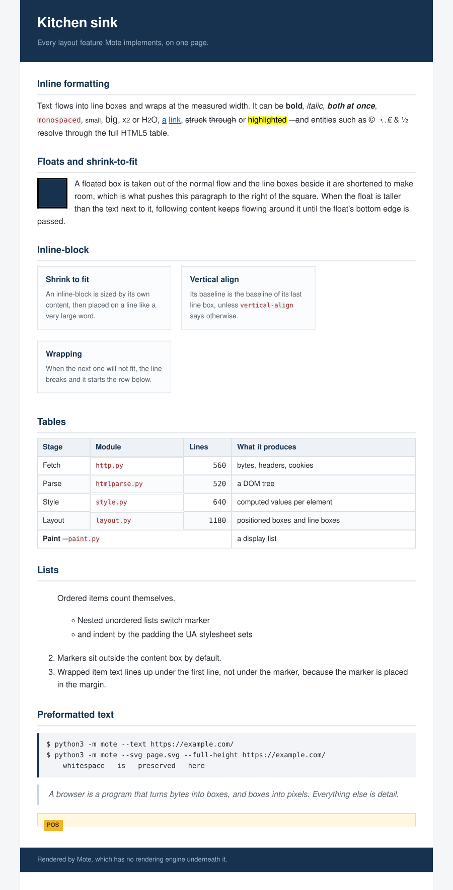
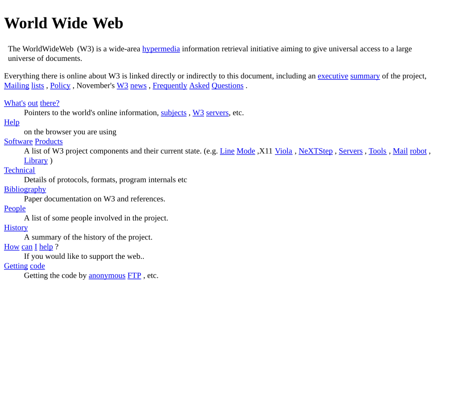
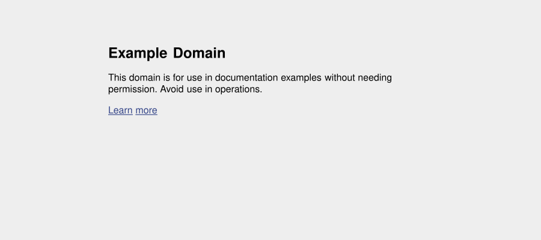
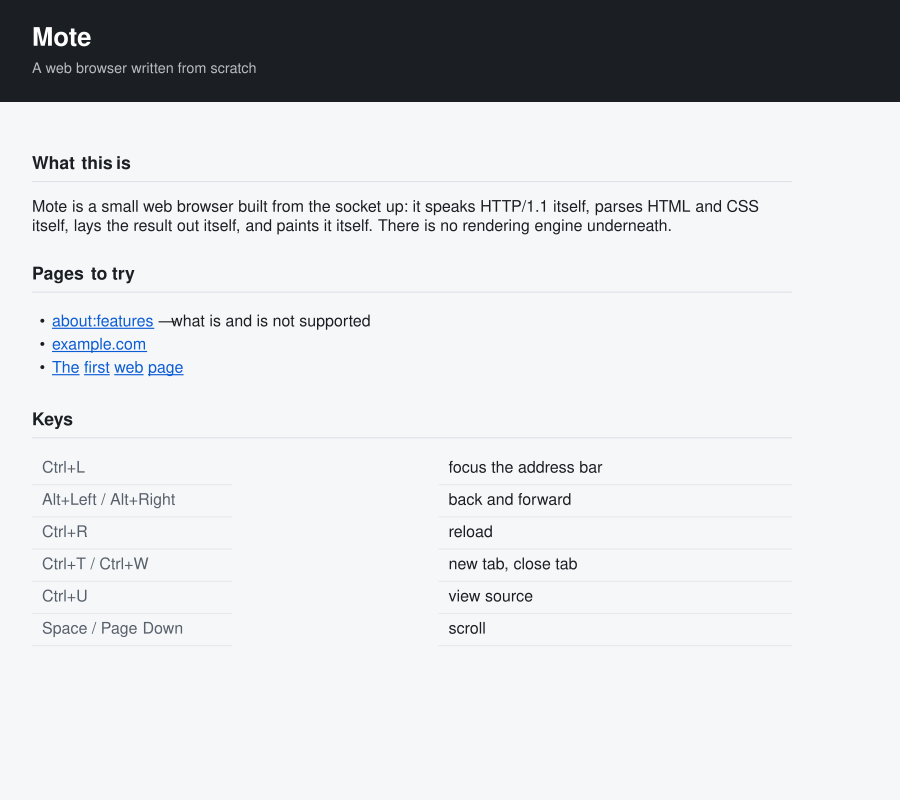

Every image below is SVG written by Mote's own painter, from Mote's own layout. Regenerate with python3 -m mote --svg FILE URL.
python3 -m mote --svg FILE URL




Source: github.com/ctbot000/web-browser-from-scratch